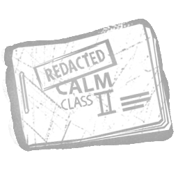

“冷静”·二级 "Calm" - Class II
罕见 · 所属：医生
效果
一种使用深波长、可舒缓多种精神疾病的电击疗法。以卡特的电火花为源，此疗法可令患者产生中度焦虑。静电爆闪准备就绪时，你的恐惧范围增加+6米。静电爆闪冷却期间，你的恐惧范围减少-6米。受疯狂影响的逃生者会遭受平静折磨：疯狂II：逃生者间歇性地听到远处虚幻的恐惧范围。疯狂III：逃生者持续听到远处虚幻的恐惧范围。

罕见 · 所属：医生
一种使用深波长、可舒缓多种精神疾病的电击疗法。以卡特的电火花为源，此疗法可令患者产生中度焦虑。静电爆闪准备就绪时，你的恐惧范围增加+6米。静电爆闪冷却期间，你的恐惧范围减少-6米。受疯狂影响的逃生者会遭受平静折磨：疯狂II：逃生者间歇性地听到远处虚幻的恐惧范围。疯狂III：逃生者持续听到远处虚幻的恐惧范围。